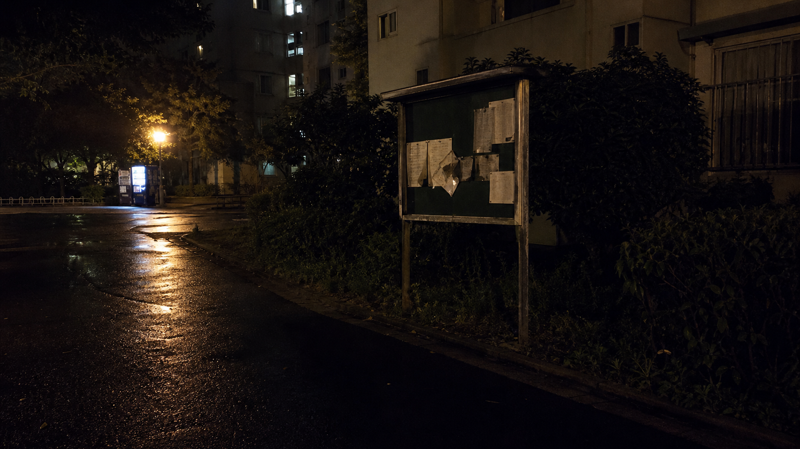

み
北の廊下、また水の音。撮影の人がマイクを向けてた。工事の貼り紙は出てない。
#かすみ野 #北廊下@kasumino.watch ・ 端末内キャッシュ

北の廊下、また水の音。撮影の人がマイクを向けてた。工事の貼り紙は出てない。
#かすみ野 #北廊下蛍光灯が戻ったと思ったらまた点滅。下でケーブル局の人が待ってた。部屋の中は撮ってないみたい。
#西階段 #照明今日は会議なし。なのに東の集会室で手を叩く音がした。反響を録ってるだけなら、なぜ204って言うんだろ。
#東集会室南倉庫の前で足音が止まった。女の人の声で「返した」と聞こえた。北棟のほう、まだ電気ついてる。
#南倉庫 #北棟Bの棚を見に行った人、戻ってきてない。
キャッシュに本文断片のみ残存